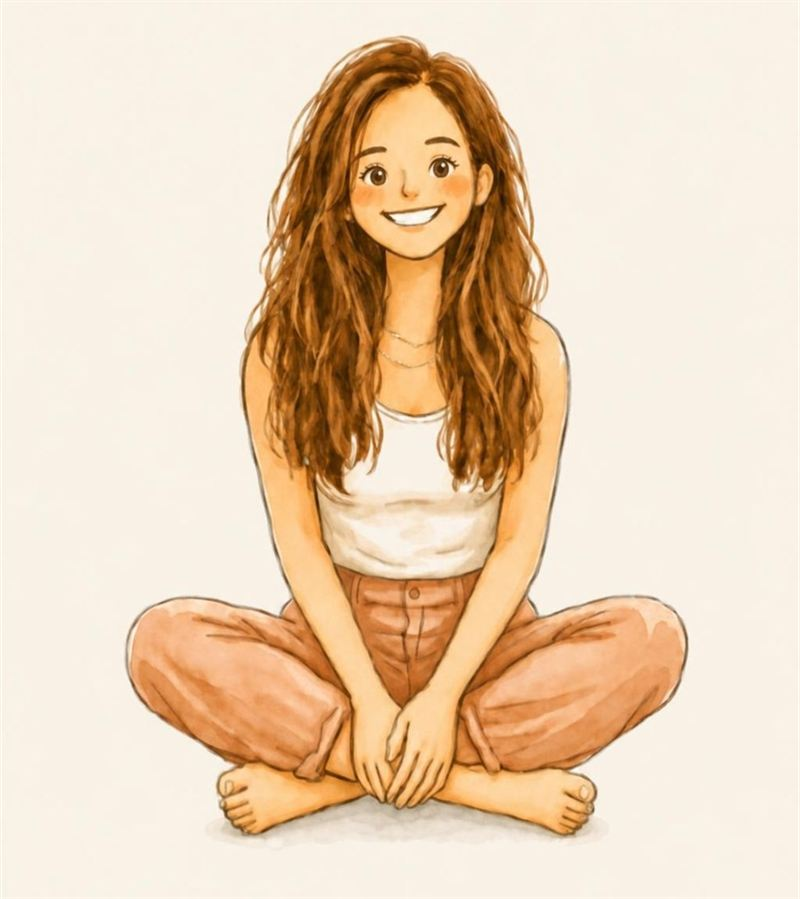

Antes de la etiqueta hubo una persona entera. Nos cuentas tu historia, o la de alguien especial, con notas de voz y la convertimos en un cuento personalizado, ilustrado en acuarela y de más de 25 páginas, para que los niños la descubran.

Hace un tiempo me di cuenta de algo. Mis amigas, mujeres increíbles, se habían convertido sobre todo en “mamás”. Y a veces ni ellas se acordaban de la chica que viajaba sola, que soñaba a lo grande o que se reía hasta llorar.
Y no les pasa solo a ellas. Les pasa a los papás, a los abuelos, a los tíos… a todos los que un día pasaron a ser, sobre todo, una etiqueta.
Por eso nació Tale Us Stories: para que los niños descubran quién era esa persona antes de serlo todo para ellos. Y para que, al leerlo, esa persona se reconozca otra vez.
Cris
Así será la portada de su libro.
Preguntas guiadas sobre la infancia, los sueños, el amor y la familia. Respondes con notas de voz, como si se lo contaras a una amiga. Se guarda solo.
A tu ritmoConvertimos esos recuerdos en un cuento de más de 25 páginas en acuarela, con sus rasgos reales a partir de una foto.
5 capítulosImpreso en 21 × 28 cm, en tapa dura o blanda, y en casa listo para regalar.
2-3 semanasUn libro de verdad, hecho con la foto y los recuerdos de Carla.
Envío incluido en los dos formatos.
Crear el libro →La mayoría de cuentos personalizados ponen el nombre del niño en una historia inventada. Los nuestros hacen lo contrario: cuentan la historia real de alguien a quien los niños quieren, para que la conozcan de verdad.
Es un libro personalizado para los abuelos, para mamá, para papá, para los tíos o los padrinos, o con tu propia historia, escrito a partir de sus recuerdos: dónde creció, qué soñaba, cómo se enamoró, cómo llegó cada nieto y lo que quiere que sepan cuando sean mayores. Cada página está ilustrada en acuarela con sus rasgos reales, a partir de una foto.
Por eso es un regalo personalizado que no se queda en un cajón: para el Día de la Madre, el Día del Padre o el Día de los Abuelos, para una jubilación, para el nacimiento de un nieto o como libro de recuerdos en memoria de alguien que ya no está.
¿Quieres empezar a recoger su historia ya? Te dejamos 60 preguntas para conocer la vida de los abuelos, de mamá o de papá.
Es un libro ilustrado en acuarela que cuenta la vida real de una persona especial para unos niños (mamá, papá, los abuelos, un tío o una tía) desde su infancia hasta hoy, escrito a partir de sus recuerdos y con sus rasgos reales. Así los niños descubren quién era antes de ser «mamá» o «abuelo».
45 € en tapa blanda y 63 € en tapa dura, con el envío incluido en los dos formatos.
Para cualquier persona especial para unos niños: mamá, papá, los abuelos, un tío o una tía, un padrino… También sobre ti, contando tu propia historia para tus hijos o nietos, o en memoria de alguien que ya no está.
No. Se guarda solo, así que puedes hacerlo a ratos y a tu ritmo. Respondes con notas de voz, como si se lo contaras a una amiga, y lo transcribimos nosotros.
Lo dibujamos a partir de cómo nos lo describas. Con una foto de la cara se parecerá mucho más.
Las dos miden 21 × 28 cm y llevan las mismas ilustraciones en acuarela sobre papel de calidad. La tapa blanda tiene cubierta flexible y 25 páginas de cuento. La tapa dura tiene cubierta rígida, más resistente para guardarla toda la vida, y una página más de historia. Las dos llevan el envío incluido.
Entre 2 y 3 semanas desde que nos envías la historia.
Solo los usamos para crear vuestro libro. Nunca los publicamos ni los usamos para nada más sin vuestro permiso.